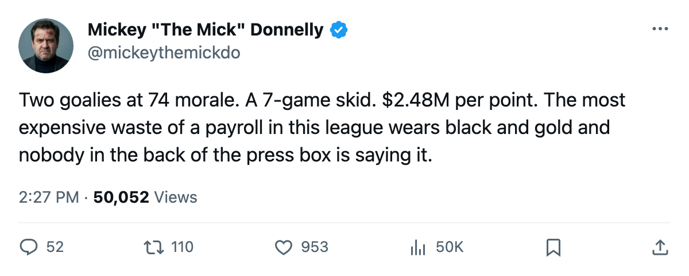
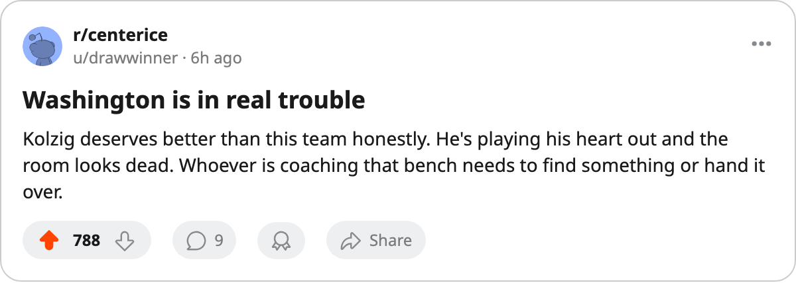

$2.48M A POINT, 7 STRAIGHT LOSSES, AND YOUR $6.20M GOALIE HATES YOU
Washington is the most expensive failure in this league and tomorrow they play the hottest room in hockey.
 Mickey "The Mick" DonnellyColumnist, ex-goalie · The Penalty Box
Mickey "The Mick" DonnellyColumnist, ex-goalie · The Penalty Box
$2.48M a point. Seven straight losses. A $6.20M goaltender at morale 74, tied for the third-lowest number on the Bureau's Morale Scale.  Washington Capitals are not in a slump. They are the worst buy in this league and the record is getting uglier every time you look at it.
Washington Capitals are not in a slump. They are the worst buy in this league and the record is getting uglier every time you look at it.
 Olaf Kolzig83 has played 25 games at an overall of 82 and a morale of 74. His backup, Leo Lopatin64, is also at 74. The club average sits at 89.8, the third-worst in the league. When your franchise goaltender is in the morale basement alongside a career backup making $0.81M, that is a bench problem, and the bench is who I am pointing at.
Olaf Kolzig83 has played 25 games at an overall of 82 and a morale of 74. His backup, Leo Lopatin64, is also at 74. The club average sits at 89.8, the third-worst in the league. When your franchise goaltender is in the morale basement alongside a career backup making $0.81M, that is a bench problem, and the bench is who I am pointing at.
The payroll reads $57.05M. The points read 23. That is $2.48M per point, the worst number in the league, and not by a slim margin. The next-worst club, San Jose, is at $2.21M and they have at least won 11 games. Washington has won 7. Their goal differential is -16. They score 74 goals and give up 90.
THE HOT ROOM COMES TO TOWN
Tomorrow night Washington visits  New York Islanders, who have won five straight, outscored opponents 33-24 over that stretch, and just put 4-2, 4-1, and 4-2 on Ottawa in three meetings. The Islanders are 18-9-3 at $1.49M a point. Washington beat them once already, in a 3-4 overtime game. The Islanders are 5-2-0 at home. Washington is 5-15 on the road.
New York Islanders, who have won five straight, outscored opponents 33-24 over that stretch, and just put 4-2, 4-1, and 4-2 on Ottawa in three meetings. The Islanders are 18-9-3 at $1.49M a point. Washington beat them once already, in a 3-4 overtime game. The Islanders are 5-2-0 at home. Washington is 5-15 on the road.
 Brian Campbell61 is on the Bureau's Development Index as a faller, down 4. Josh Harding77 is on the riser list, up 8, at 21 years old. The kid is improving and the $6.20M man is not getting any happier about it. That is what happens when morale sits where it sits and wins don't come.
Brian Campbell61 is on the Bureau's Development Index as a faller, down 4. Josh Harding77 is on the riser list, up 8, at 21 years old. The kid is improving and the $6.20M man is not getting any happier about it. That is what happens when morale sits where it sits and wins don't come.
The last time Washington won a game was before December 10. Since then: L, L, O, T, L, L, L, O, T, L, L, W, L, L. A win in there, buried under a mountain. The Bureau's Morale Scale does not measure how a man feels after losing 13 of 14. It has a way of telling you anyway.
Washington has the worst per-point return in hockey. The bench has had a month to fix it. The room is 74 where the goaltender sits. The streak is 7. And tomorrow the Islanders want to make it 8 against a club that already beat them once and has nothing left to prove.
Reimer and his spreadsheet can tell you the expected goals against. I'll tell you what I see: a $6.20M man who does not want to be there, a club that cannot win at home or on the road, and a bench that has no answer on the sheet.

